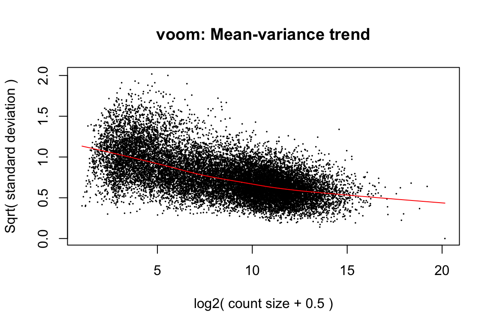

第 5 章 limma-voom
5.1 加载数据
# 加载包
bio.p <- c("DESeq2", "tibble", "dplyr", "limma", "edgeR")
status = suppressPackageStartupMessages(
lapply(bio.p, library, character.only = TRUE)
)
load(file = 'Rdata/symbol_matrix.Rdata')
group <- group_list # 分组标准名字
counts_data <- symbol_matrix # 计数矩阵标准名字
# title
title <- paste0(group[1], "_vs_", group[2])
# 输出文件夹
OUT_FOLDER <- "DEG_Analysis"
dir.create(OUT_FOLDER, showWarnings = FALSE)
# 输出文件名
OUTPUT_FILE <- paste0(title, "_all_limma_voom.csv")
# 创建一个样本分组信息
df = data.frame(
sample = colnames(symbol_matrix),
group = group
)
# 样本名
sample_names <- df$sample
col_names_A <- filter(df, group == levels(df$group)[1])$sample
col_names_B <- filter(df, group == levels(df$group)[2])$sample
# 计数矩阵取整
counts_mat = round(counts_data[, sample_names])5.2 limma-voom 分析
# 创建线性模型的设计矩阵
design <- model.matrix(~0 + factor(group_list))
colnames(design) <- levels(factor(group_list))
rownames(design) <- colnames(counts_mat)
# 准备DGEList对象并进行标准化
dge <- DGEList(counts = counts_mat, group = group_list)
# 过滤
keep <- filterByExpr(dge)
dge <- dge[keep, ,keep.lib.sizes=FALSE]
dge <- calcNormFactors(dge)
# 使用 voom 将计数转换为 logCPM
logCPM <- cpm(dge, log = TRUE, prior.count = 3)
v <- voom(dge, design, plot = TRUE, normalize = "quantile")
# 拟合线性模型
fit <- lmFit(v, design)
# 定义差异表达的对比
g1 <- levels(factor(group_list))[1]
g2 <- levels(factor(group_list))[2]
con <- paste0(g2, '-', g1)
# 创建对比矩阵并使用对比拟合模型
cont.matrix <- makeContrasts(contrasts = con, levels = design)
fit2 <- contrasts.fit(fit, cont.matrix)
fit2 <- eBayes(fit2)
# 提取最显著的差异表达基因
DEG_limma_voom <- topTable(fit2, coef = con, n = Inf)
DEG_limma_voom <- na.omit(DEG_limma_voom)5.3 整理分析结果，规范输出
# 差异分析结果
data <- as.data.frame(DEG_limma_voom)
# 添加想要的信息
data <- dplyr::rename(data,
PValue = P.Value,
log2FoldChange = logFC,
FDR = `adj.P.Val`
)
data$FDR[is.na(data$FDR)] <- 1
data$foldChange = 2 ^ data$log2FoldChange
data$PAdj = p.adjust(data$PValue, method = "hochberg")
data$baseMeanA = 1
data$baseMeanB = 1
total <- data %>%
rownames_to_column("SYMBOL")
# 按照 P-value排序
total = arrange(total, PValue)
# 计算 false discovery counts
total$falsePos = 1:nrow(total) * total$FDR
# # 将数字四舍五入，使其更美观
# total$foldChange = round(total$foldChange, 3)
# total$log2FoldChange = round(total$log2FoldChange, 1)
# total$FDR = round(total$FDR, 4)
total$falsePos = round(total$falsePos, 0)
total$PAdj = formatC(total$PAdj, format = "e", digits = 3)
total$PValue = formatC(total$PValue, format = "e", digits = 3)
# 重新组织列名
new_cols = c("SYMBOL",
"foldChange", "log2FoldChange",
"AveExpr","t", "B","PValue","PAdj",
"FDR","falsePos")
total = total[, new_cols]